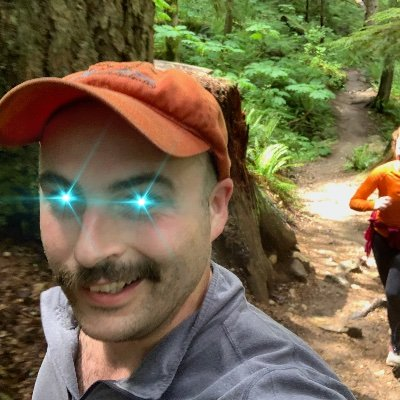

|  |
Eamon ConheadyManager of Breen Community Investing, LLC Real estate investor, crypto/decentralization proponent, eater of bacon (aka "meat candy"). |
| Dates | Work Experience |
|---|---|
| 2020 - Current | Public Health RN King County - COVID Response |
| 2019 - 2020 | Travel Nurse |
| 2017 - 2019 | RN - Cardiac ICU - University of Utah Hospital |
| Token | First Discovered | Why? |
|---|---|---|
| Bitcoin | 2012 | Introduction to concept of digital currency, trading, and GPU & ASIC Mining. |
| Ethereum | 2018 | Exploration of decentralized computing use cases. |
| DeFi | 2020 | Deployedment capital across broad range of DeFi protocols for, LP, p2p Loans, & DAO |
| # of People Onboarded | 6 Individuals & 3 LLCs | Assistance with understanding crypto, establishing accounts for CeFi custody and self-custody of tokens, & development of corporate strategies. |
| Web development | ⭐⭐ |
| Property Valuation | ⭐⭐⭐⭐ |
| Nursing Assessment | ⭐⭐⭐⭐⭐ |
| Woodworking | ⭐⭐⭐ |